Lab 4: Sparse PCA and LDA
High Dimensional Data Analysis practicals
Adapted by Milan Malfait and Leo Fuhrhop
18 Nov 2021
(Last updated: 2025-11-06)
Change log
## install packages with:
# install.packages(c("glmnet", "MASS", "ggplot2", "gridExtra", "ggpubr"))
# if (!requireNamespace("remotes", quietly = TRUE)) {
# install.packages("remotes")
# }
# remotes::install_github("statOmics/HDDAData")
library(glmnet)
library(MASS)
library(HDDAData)
library(ggplot2)
library(gridExtra)
library(ggpubr)1 Introduction
In this lab session we will look at the following topics
- Methods to set some of the loadings exactly to zero in a PCA
- Use
glmnet()to add penalties on principal component loadings - Use LDA to understand differences between groups in a high dimensional space
The dataset
In this practical session, we use the dataset by Alon et al. (1999) on gene expression levels in 40 tumour and 22 normal colon tissue samples. They checked a total of 6500 human genes using the Affymetrix oligonucleotide array.
You can load the data in as follows:
data("Alon1999")
str(Alon1999[, 1:10])
#> 'data.frame': 62 obs. of 10 variables:
#> $ Y : chr "t" "n" "t" "n" ...
#> $ X1: num 8589 9164 3826 6246 3230 ...
#> $ X2: num 5468 6720 6970 7824 3694 ...
#> $ X3: num 4263 4883 5370 5956 3401 ...
#> $ X4: num 4065 3718 4706 3976 3464 ...
#> $ X5: num 1998 2015 1167 2003 2181 ...
#> $ X6: num 5282 5570 1572 2131 2923 ...
#> $ X7: num 2170 3849 1325 1531 2069 ...
#> $ X8: num 2773 2793 1472 1715 2949 ...
#> $ X9: num 7526 7018 3297 3870 3303 ...
dim(Alon1999)
#> [1] 62 2001
table(Alon1999$Y)
#>
#> n t
#> 22 40The dataset contains one variable named Y with the values t and n. This
variable indicates whether the sample came from tumourous (t) or normal (n)
tissue. For more information on this dataset, see ?Alon1999.
The goal of this practical is to find the best subset / combination of genes to detect tumourous tissue. As in Alon et al. (1999), we use the 2000 genes with the highest minimal intensity across the samples.
2 Sparse PCA
Begin by constructing the data matrix X, which contains the centered and scaled predictors,
and the response variable Y as a binary factor.
Use these objects to solve the following exercises.
Tasks
1. Perform a SVD on X and store the scores of the PCs.
2. Produce a scree plot and confirm that the first and second PCs can approximate the data to some extent.
Recall from Lab 2 that a scree plot displays the proportion of variance explained by each PC.
Solution
Calculate the proportion of variance explained by each PC.
var_explained <- pca_x$sdev^2 / sum(pca_x$sdev^2)
# alternative: svd_X$d^2 / sum(svd_X$d^2)
# Create dataframe for plotting
prop_var <- data.frame(PC = 1:ncol(pca_x$x), Var = var_explained)
# alternative: PC = ncol(Z)Visualize with a scree plot using ggplot2:
ggplot(prop_var, aes(PC, Var)) +
geom_point() +
geom_line() +
geom_vline(xintercept = 2.5, col = "firebrick") +
scale_x_continuous(breaks = seq(0, 60, by = 5)) +
labs(
y = "Proportion of variance",
title = "Proportion of variance explained by each PC"
) +
theme_minimal()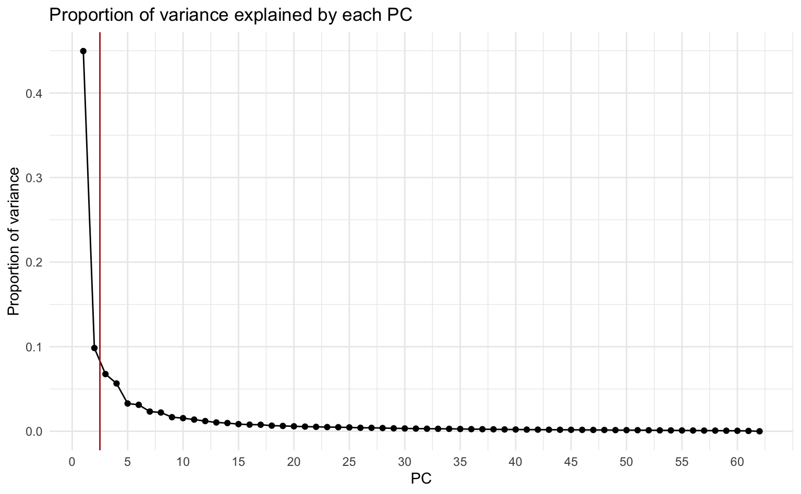
Alternatively, using base R plotting:
plot(prop_var$PC, prop_var$Var,
type = "b", ylab = "Proportion of variance", xlab = "PC",
)
title("Proportion of variance explained by each PC")
abline(v = 2.5, col = "firebrick")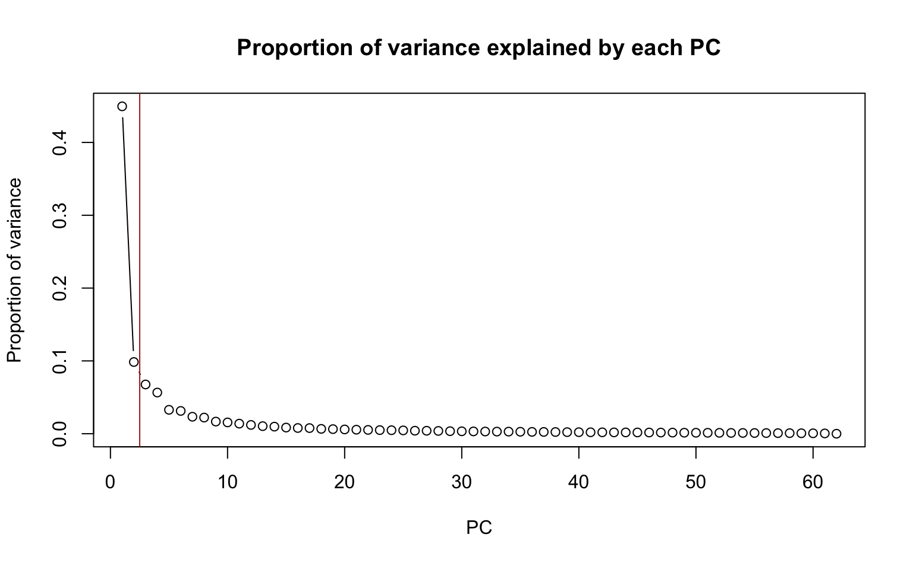
About 55% of the variance in the data are explained by the first and second PCs.
3. Plot the first two PCs and use different colours for tumor / normal tissue.
Due to the large number of features, the biplot would be difficult to interpret. A simple scatterplot, separated by tumor / normal tissue, is more informative in this setting.
Solution
scores_1_2 <- data.frame(PC1 = pca_x$x[, 1], PC2 = pca_x$x[, 2], Tissue = Y)
# Alternative: retrieve scores from Z[, 1], Z[, 2]
ggplot(scores_1_2, aes(PC1, PC2)) +
geom_point(aes(col = Tissue), size = 2) +
scale_color_manual(values = c("deepskyblue2", "coral1")) +
theme_minimal() +
theme(aspect.ratio = 0.8, legend.position = "top")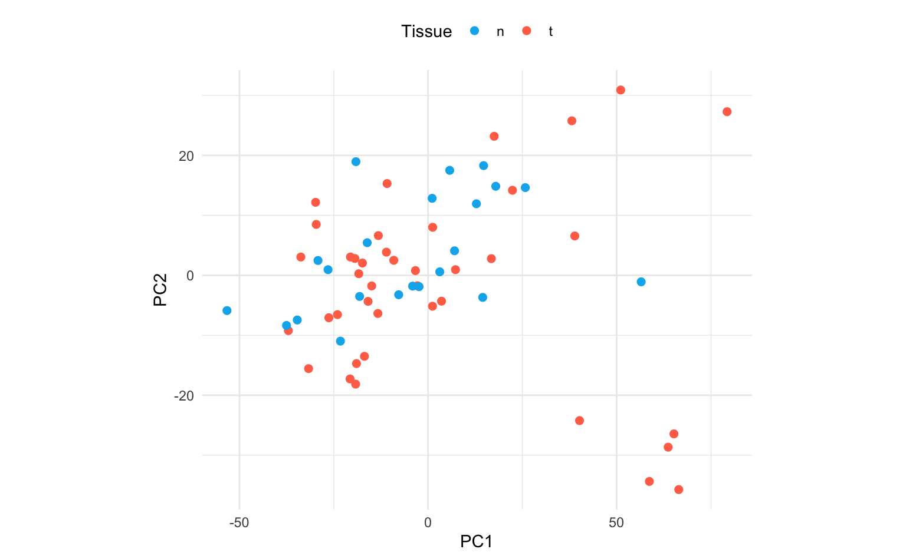
Alternatively, using base R plotting:
cols <- c("n" = "deepskyblue2", "t" = "coral1")
plot(scores_1_2$PC1, scores_1_2$PC2,
col = cols[Y],
xlab = "PC1", ylab = "PC2", pch = 19
)
legend("topleft", c("Normal", "Tumor"),
col = cols,
pch = 19, title = "Tissue"
)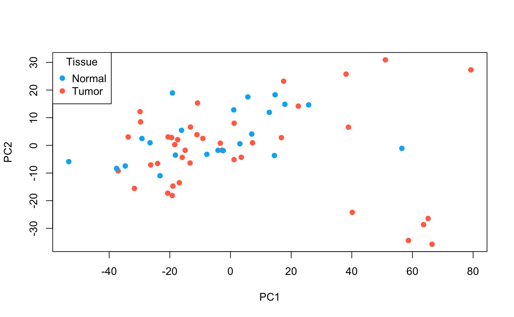
Interpretation: using only the first 2 PCs does not seem to separate the tumor and normal cases clearly.
4. Plot histograms of the loadings of the first and second PCs. Interpret.
Solution
loadings_1_2 <- data.frame(
loadings_1 = pca_x$rotation[, 1], loadings_2 = pca_x$rotation[, 2]
)
# alternative: loadings_1 = V[, 1], loadings_2 = V[, 2]
# First plot (PC1)
p1 <- ggplot(loadings_1_2, aes(x = loadings_1)) +
geom_histogram(bins = 50, fill = "grey80", color = "black") +
geom_vline(
xintercept = quantile(loadings_1_2$loadings_1, 0.95),
color = "firebrick",
linewidth = 1.2
) +
labs(x = "PC 1 loadings", y = "Count", title = NULL) +
theme_minimal(base_size = 14)
# Second plot (PC2)
p2 <- ggplot(loadings_1_2, aes(x = loadings_2)) +
geom_histogram(bins = 50, fill = "grey80", color = "black") +
geom_vline(
xintercept = quantile(loadings_1_2$loadings_2, c(0.05, 0.95)),
color = "firebrick",
linewidth = 1.2
) +
labs(x = "PC 2 loadings", y = "Count", title = NULL) +
theme_minimal(base_size = 14)
# Arrange plots vertically
grid.arrange(p1, p2, ncol = 1)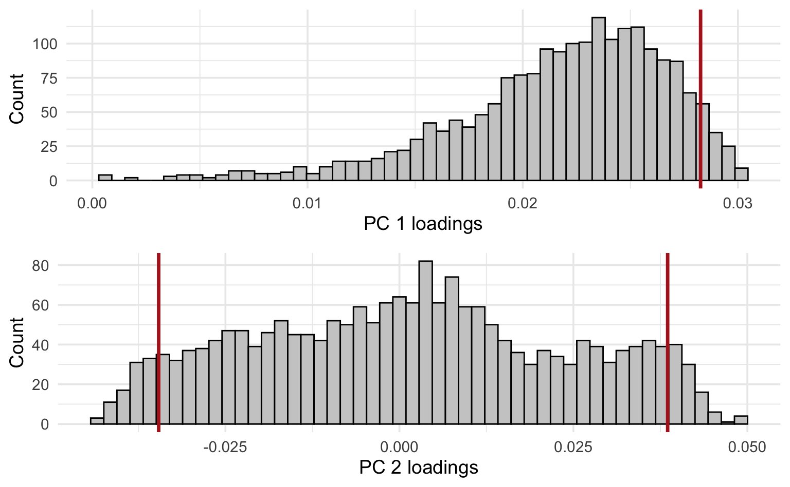
Alternatively, using base R plotting:
par(mfrow = c(2, 1))
# First plot (PC1)
hist(loadings_1_2$loadings_1, breaks = 50, xlab = "PC 1 loadings", main = "")
# Add vertical line at 95% quantile
abline(v = quantile(loadings_1_2$loadings_1, 0.95), col = "firebrick", lwd = 2)
# Second plot (PC2)
hist(loadings_1_2$loadings_2, breaks = 50, xlab = "PC 2 loadings", main = "")
abline(v = c(
quantile(loadings_1_2$loadings_2, 0.05),
quantile(loadings_1_2$loadings_2, 0.95)
), col = "firebrick", lwd = 2)
Vertical lines were added at the 95th percentile for PC1 and the 5th and 95th percentiles for PC2 to reflect where the largest (in absolute value) loadings are situated (no negative loadings for PC1, so only showing the 95th percentile).
Interpretation: remember that the PC loadings reflect the contributions of each feature (in this case: gene) to the PC. From these histograms it should be clear that only a minor fraction of the genes are really driving these first 2 PCs, especially for PC2 (where the bulk of genes has loadings close to 0).
We know that the first PC is given by
where are the loadings of the first PC. By setting and , we can express this as the regression
Recall that the ridge regression solution for is given by
5. Replace with and verify numerically in R that
You may use any of your choice. Remember that .
Solution
p <- dim(X)[2]
tXX_lambda_I <- t(X) %*% X + 2 * diag(p)
# This might take a while to calculate
beta_ridge <- solve(tXX_lambda_I) %*% t(X) %*% Z[, 1]
mag_beta_ridge <- sqrt(sum(beta_ridge^2))
max(abs(V[, 1] - beta_ridge / mag_beta_ridge))
#> [1] 2.15872e-10
# alternative for V[, 1]: pca_x$rotation[, 1]For a visual comparison, we can also plot against the loadings .
par(mfrow = c(1, 1))
plot(V[, 1], beta_ridge / mag_beta_ridge,
xlab = expression("V"[1]),
ylab = expression(beta["ridge"] / paste("||", beta, "||")[2]),
pch = 19
)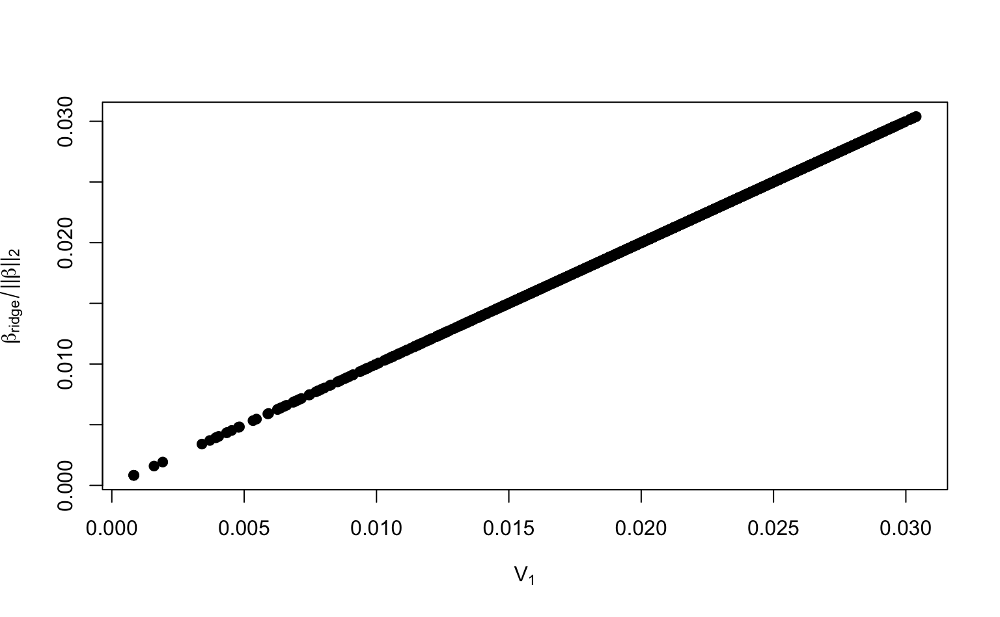
You have now seen that the loadings of the PCs can be computed from ridge regression coefficients.
If we introduce an additional penalty on the coefficients, we move from ridge regression to elastic net regression. Recall that elastic net regression minimizes the criterion for . Whenever , a sufficiently large forces some of the coefficients in to become zero.
Regressing the principal component on therefore sets some of the loadings to zero. This means that elastic net can be used to implement sparse PCA.
6. Fit an elastic net model for . Use alpha = 0.5 and lambda = c(11, 1.75, 0.3). Determine the number of non-zero loadings for each choice of lambda. Repeat the same steps for , but use lambda = c(5, 1.5, 0.15).
Solution
# Helper function to determine number of non-zero loadings
num_loadings <- function(fit) {
lambdas <- fit$lambda
num_nonzero <- NULL
for (lambda in lambdas) {
num_nonzero <- c(
num_nonzero, sum(as.vector(coef(fit, s = lambda))[-1] != 0)
)
}
return(data.frame(lambdas, num_nonzero))
}
# Elastic net for Z_1
fit_loadings1 <- glmnet(X, Z[, 1], alpha = 0.5, lambda = c(11, 1.75, 0.3))
num_loadings(fit_loadings1)
# Elastic net for Z_2
fit_loadings2 <- glmnet(X, Z[, 2], alpha = 0.5, lambda = c(5, 1.5, 0.15))
num_loadings(fit_loadings2)7. Plot the resulting sparse first and second PCs and use different colors for tumor / normal tissue. How well do these new PCs separate the response classes?
You may reuse the code from task 3 to produce 3 new plots for , and . Compare this to the plot for the original PCs from task 3 and interpret.
Solution
Using base R plotting:
# Helper function for scatterplot between two sparse PCs
plot_sparse_PCA <- function(loadings1, loadings2) {
nonzero1 <- sum(loadings1[-1] != 0)
nonzero2 <- sum(loadings2[-1] != 0)
SPC1 <- X %*% loadings1[-1]
SPC2 <- X %*% loadings2[-1]
plot(
SPC1, SPC2, col = cols[Y], xlab = "SPC1", ylab = "SPC2", pch = 16,
ylim = c(-40, 40), xlim = c(-60, 95),
main = paste(nonzero1, "genes for SPC1,", nonzero2, "for SPC2")
)
legend(
"topleft", legend = c("Normal tissue", "Tumor tissue"),
bty = "n", col = cols, pch = c(16, 16), cex = 1
)
}
par(mfrow = c(2, 2))
plot(Z[, 1], Z[, 2],
col = cols[Y], xlab = "PC1", ylab = "PC2", pch = 16,
ylim = c(-40, 40), xlim = c(-60, 95),
main = "All 2000 genes \nfor PC1 and PC2"
)
legend(
"topleft", legend = c("Normal tissue", "Tumor tissue"),
bty = "n", col = cols, pch = c(16, 16), cex = 1
)
plot_sparse_PCA(
as.vector(coef(fit_loadings1, s = 0.3)),
as.vector(coef(fit_loadings2, s = 0.15))
)
plot_sparse_PCA(
as.vector(coef(fit_loadings1, s = 1.75)),
as.vector(coef(fit_loadings2, s = 1.5))
)
plot_sparse_PCA(
as.vector(coef(fit_loadings1, s = 11)),
as.vector(coef(fit_loadings2, s = 6))
)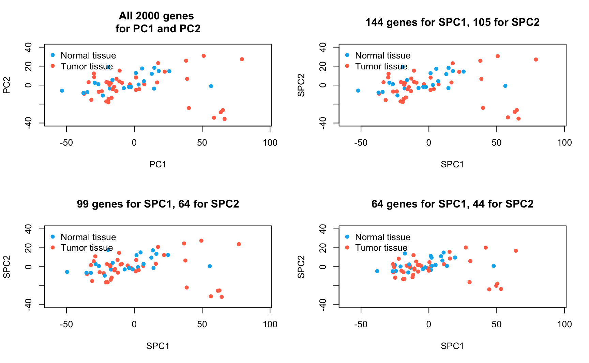
Alternatively, using ggplot:
# Helper function for scatterplot between two sparse PCs
plot_sparse_PCA <- function(loadings1, loadings2) {
nonzero1 <- sum(loadings1[-1] != 0)
nonzero2 <- sum(loadings2[-1] != 0)
SPC1 <- X %*% loadings1[-1]
SPC2 <- X %*% loadings2[-1]
ggplot(data.frame(SPC1, SPC2, Tissue = Y), aes(SPC1, SPC2)) +
geom_point(aes(col = Tissue), size = 2) +
scale_color_manual(values = c("deepskyblue2", "coral1")) +
labs(title = paste(nonzero1, "genes for SPC1,", nonzero2, "for SPC2")) +
xlim(-60, 95) +
ylim(-40, 40) +
theme_minimal() +
theme(legend.position = "bottom", text = element_text(size = 8))
}
plot1 <- ggplot(scores_1_2, aes(PC1, PC2)) +
geom_point(aes(col = Tissue), size = 2) +
scale_color_manual(values = c("deepskyblue2", "coral1")) +
labs(title = "All 2000 genes for PC1 and PC2") +
xlim(-60, 95) +
ylim(-40, 40) +
theme_minimal() +
theme(legend.position = "bottom", text = element_text(size = 8))
plot2 <- plot_sparse_PCA(
as.vector(coef(fit_loadings1, s = 0.3)),
as.vector(coef(fit_loadings2, s = 0.15))
)
plot3 <- plot_sparse_PCA(
as.vector(coef(fit_loadings1, s = 1.75)),
as.vector(coef(fit_loadings2, s = 1.5))
)
plot4 <- plot_sparse_PCA(
as.vector(coef(fit_loadings1, s = 11)),
as.vector(coef(fit_loadings2, s = 6))
)
ggarrange(plot1, plot2, plot3, plot4)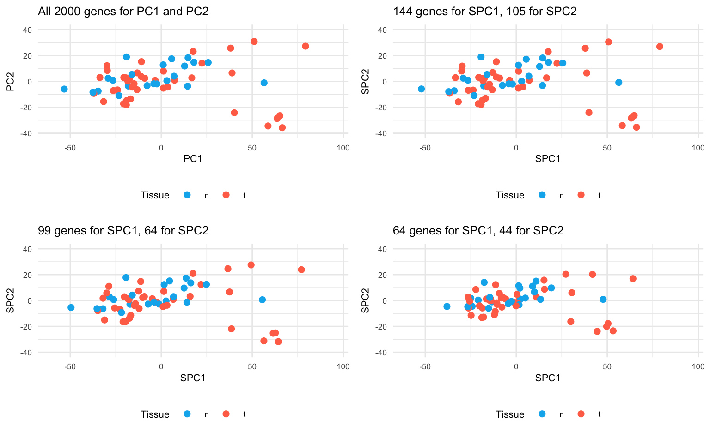
Conclusion: Sparse PCA has succeeded in setting the uninformative genes / loadings to zero. In separating normal and tumour tissues, SPCA performs vitually the same as PCA. By increasing , more sparsity is induced in the loadings, while the overall visual impression remains comparable. The key point here is that SPCA uses only a minor proportion of the original features to achieve the same results, suggesting that the largest variability of the data is only driven by a minority of features.
Remark: Oftentimes, is chosen in such a way that a particular number or range of nonzero loadings is obtained. This is how we proceeded above, where we considered a sequence of ’s resulting in different levels of sparsity. Alternatively, if you want to select in a data-driven manner, you cannot rely on cross-validation with the predictive MSE as used in Lab 3. The reason for this is that the minimal cross-validated MSE will be achieved for (or the smallest positive value that can be evaluated without numerical problems). Instead, you can take a look at the proportion of variance that is explained by the sparse PCs to select a sensible number of nonzero loadings or a sensible .
3 LDA
In this section, we will perform LDA on the data by Alon et al. (1999) to get a clear understanding on the genes responsible for separating the tumor and normal tissue groups.
Remember that the LDA problem can be stated as
which is equivalent to the eigenvalue / eigenvector problem
In our case, where we only have two groups, only one solution exists. This is the eigenvector and its eigenvalue. can can be interpreted in terms of which predictors are important to discriminate between the two classes. We can then write the scores as
Tasks
1. Use the lda() function from the MASS package to fit an LDA on X with grouping Y.
Note that the grouping has to be a factor variable.
2. Extract from the lda object.
Hint: Have a look at the “Value” section of ?lda.
4. Plot the scores against the response to see how well the LDA separates the tumour and normal tissues groups. Interpret your plot.
Hint: A boxplot would be an appropriate visualization, but feel free to be creative.
Solution
Using ggplot:
ggplot(data.frame(Z1, Y), aes(x = Y, y = Z1, fill = as.factor(Y))) +
geom_boxplot() +
scale_fill_manual(values = cols) +
labs(x = "Y", y = "Z",
title = "Separation of normal and tumour samples by LDA"
) +
theme_minimal() +
theme(legend.position = "none", plot.title = element_text(hjust = 0.5))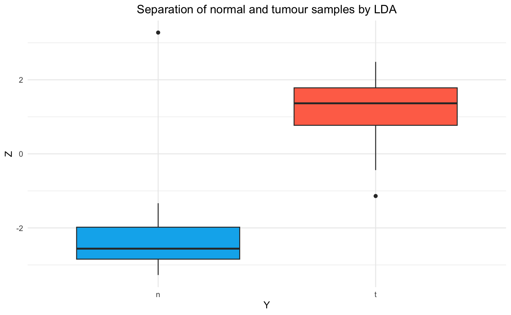
Alternatively, using base R plotting:
par(mfrow = c(1, 1))
boxplot(
Z1 ~ Y, col = cols, ylab = "Z",
main = "Separation of normal and tumour samples by LDA"
)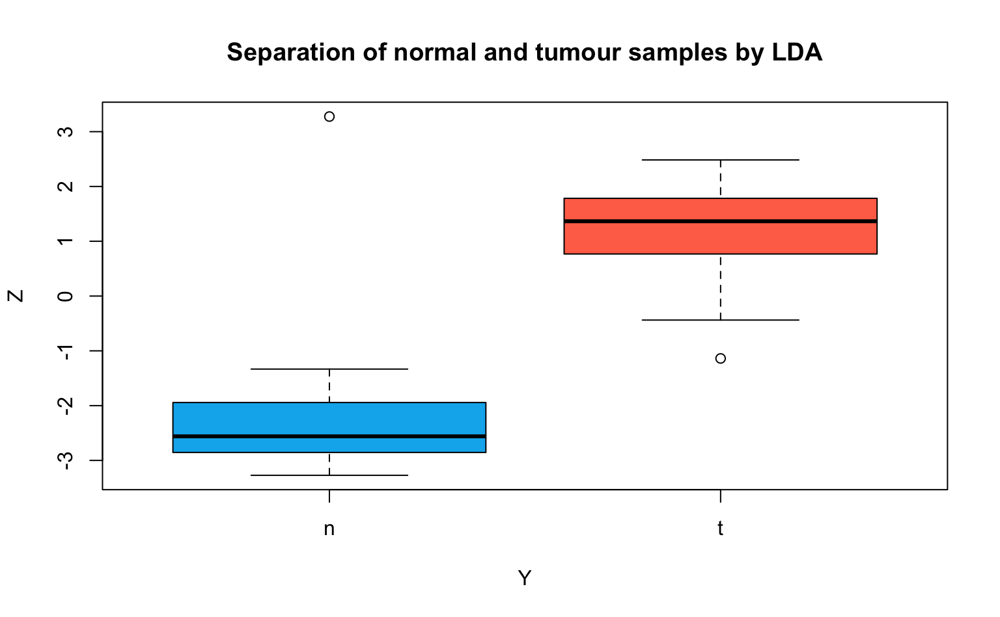
Interpretation: The LDA can separate the tumour and normal tissue samples very well. In comparison, the first and second components of the (sparse) PCA (an unsupervised method) in the first part of this Lab did not discriminate the two groups nearly as well.
We can view as a regression of on with coefficient vector . The entries of are non-zero for all genes. To implement a sparse LDA, where some of the entries of are set to zero, we can introduce an penalty on and fit a Lasso regression. The resulting will only be determined by a few interesting genes instead of all 2000.
5. Fit a Lasso model for with lambda = c(0.1, 0.01, 0.001). Determine the number of non-zero loadings for each choice of lambda.
6. Plot the resulting sparse scores against the response. Are the smaller subsets of genes as effective in separating the tumour and normal tissue groups as the entire set of genes?
You may reuse the code from task 4 to produce 3 new plots, one for each choice of . Compare this to the plot for the original LDA from task 4 and interpret.
Solution
Using base R plotting:
# Helper function for scatterplot between two sparse PCs
plot_sparse_LDA <- function(loadings) {
n_nonzero <- sum(loadings[-1] != 0)
SLDA <- X %*% loadings[-1]
boxplot(
SLDA ~ Y, col = cols, ylab = "Z",
main = sprintf("Subset of %d genes", n_nonzero),
ylim = c(-4, 4)
)
}
par(mfrow = c(2, 2))
boxplot(
Z1 ~ Y, col = cols, ylab = "Z",
main = "Entire set of 2000 genes",
ylim = c(-4, 4)
)
plot_sparse_LDA(
as.vector(coef(lda_loadings, s = 0.002))
)
plot_sparse_LDA(
as.vector(coef(lda_loadings, s = 0.02))
)
plot_sparse_LDA(
as.vector(coef(lda_loadings, s = 0.2))
)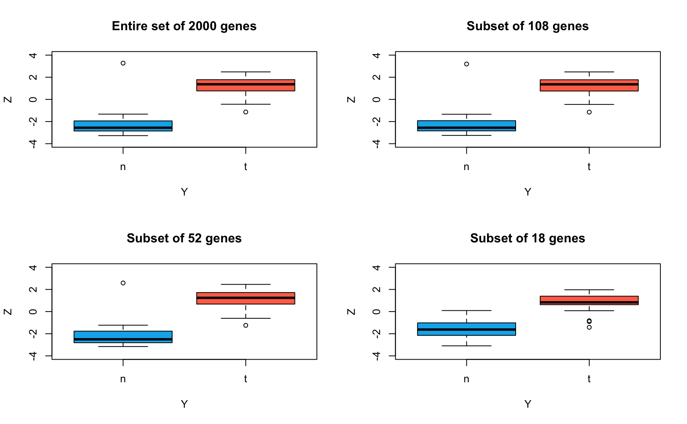
Alternatively, using ggplot:
# Helper function for scatterplot between two sparse PCs
plot_sparse_LDA <- function(loadings) {
n_nonzero <- sum(loadings[-1] != 0)
SLDA <- X %*% loadings[-1]
ggplot(data.frame(SLDA, Y), aes(x = Y, y = SLDA, fill = as.factor(Y))) +
geom_boxplot() +
scale_fill_manual(values = cols) +
labs(x = "Y", y = "Z",
title = sprintf("Subset of %d genes", n_nonzero)
) +
ylim(-4, 4) +
theme_minimal() +
theme(legend.position = "none", plot.title = element_text(hjust = 0.5))
}
plot1 <- ggplot(data.frame(Z1, Y), aes(x = Y, y = Z1, fill = as.factor(Y))) +
geom_boxplot() +
scale_fill_manual(values = cols) +
labs(x = "Y", y = "Z",
title = "Entire set of 2000 genes"
) +
ylim(-4, 4) +
theme_minimal() +
theme(legend.position = "none", plot.title = element_text(hjust = 0.5))
plot2 <- plot_sparse_LDA(
as.vector(coef(lda_loadings, s = 0.002))
)
plot3 <- plot_sparse_LDA(
as.vector(coef(lda_loadings, s = 0.02))
)
plot4 <- plot_sparse_LDA(
as.vector(coef(lda_loadings, s = 0.2))
)
ggarrange(plot1, plot2, plot3, plot4)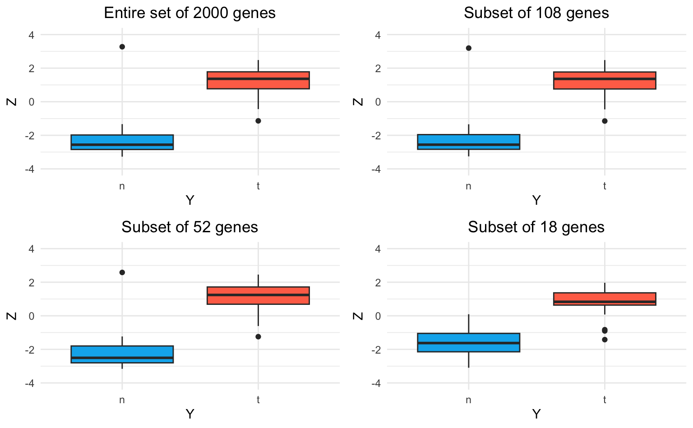
Conclusion: Sparse LDA performs almost identically to the original LDA in separating normal and tumour tissues. Even with only the 18 most important genes, the sparse LDA is mostly able to discriminate the two classes well. Therefore, the separation between normal and tumour tissues is mainly driven by only a small proportion of genes.
Bonus: Evaluation of LDA as a predictive classifier
We use 10-fold cross-validation to evaluate the predictive accuracy of classifications from the original LDA on all 2000 genes and the SLDA on the three smaller subsets of genes.
set.seed(914751)
# Helper function to compute accuracy given v, X, and Y
lda_accuracy <- function(v, X, Y) {
preds <- (X %*% v) > 0
obs <- Y == "t"
return(1 - mean(abs(preds - obs)))
}
acc_full <- acc_small <- acc_smaller <- acc_smallest <- NULL
# Randomly split the data into k folds
folds <- sample(rep(1:10, length.out = length(Y)))
for (k in 1:10) {
# Assign the train and validation set for this fold
val_idx <- which(folds == k)
train_idx <- setdiff(seq_len(length(Y)), val_idx)
X_train <- X[train_idx, , drop = FALSE]
Y_train <- Y[train_idx]
X_val <- X[val_idx, , drop = FALSE]
Y_val <- Y[val_idx]
# Fit the LDA
lda_fold <- lda(x = X_train, grouping = Y_train)
# Fit the SLDA with three levels of sparsity
Z_fold <- X_train %*% lda_fold$scaling
lasso_fold <- glmnet(X_train, Z_fold, alpha = 1, lambda = c(0.2, 0.02, 0.002))
# Evaluate the accuracy of all four models on the validation set
acc_full <- c(acc_full, lda_accuracy(lda_fold$scaling, X_val, Y_val))
acc_small <- c(
acc_small,
lda_accuracy(as.vector(coef(lasso_fold, s = 0.002))[-1], X_val, Y_val)
)
acc_smaller <- c(
acc_smaller,
lda_accuracy(as.vector(coef(lasso_fold, s = 0.02))[-1], X_val, Y_val)
)
acc_smallest <- c(
acc_smallest,
lda_accuracy(as.vector(coef(lasso_fold, s = 0.2))[-1], X_val, Y_val)
)
}
#> Warning in lda.default(x, grouping, ...): variables are collinear
#> Warning in lda.default(x, grouping, ...): variables are collinear
#> Warning in lda.default(x, grouping, ...): variables are collinear
#> Warning in lda.default(x, grouping, ...): variables are collinear
#> Warning in lda.default(x, grouping, ...): variables are collinear
#> Warning in lda.default(x, grouping, ...): variables are collinear
#> Warning in lda.default(x, grouping, ...): variables are collinear
#> Warning in lda.default(x, grouping, ...): variables are collinear
#> Warning in lda.default(x, grouping, ...): variables are collinear
#> Warning in lda.default(x, grouping, ...): variables are collinear
data.frame(
LDA = c("original", "sparse", "sparser", "sparsest"),
accuracy = c(
mean(acc_full), mean(acc_small), mean(acc_smaller), mean(acc_smallest)
)
)Additional resources
- Section 4.3 (LDA) and 14.5.5 (SPCA) of Hastie, Tibshirani, and Friedman (2009)
- For a simple explanation of the concept and interpretation of LDA (and other statistical methods), have a look at https://www.youtube.com/watch?v=azXCzI57Yfc
Session info
Session info
#> [1] "2025-11-06 10:03:36 CET"
#> ─ Session info ───────────────────────────────────────────────────────────────
#> setting value
#> version R version 4.5.2 (2025-10-31)
#> os macOS Sequoia 15.6
#> system aarch64, darwin20
#> ui X11
#> language (EN)
#> collate en_US.UTF-8
#> ctype en_US.UTF-8
#> tz Europe/Brussels
#> date 2025-11-06
#> pandoc 3.6.3 @ /Applications/RStudio.app/Contents/Resources/app/quarto/bin/tools/aarch64/ (via rmarkdown)
#> quarto 1.7.32 @ /Applications/RStudio.app/Contents/Resources/app/quarto/bin/quarto
#>
#> ─ Packages ───────────────────────────────────────────────────────────────────
#> package * version date (UTC) lib source
#> abind 1.4-8 2024-09-12 [1] CRAN (R 4.5.0)
#> backports 1.5.0 2024-05-23 [1] CRAN (R 4.5.0)
#> bookdown 0.45 2025-10-03 [1] CRAN (R 4.5.0)
#> broom 1.0.10 2025-09-13 [1] CRAN (R 4.5.0)
#> bslib 0.9.0 2025-01-30 [1] CRAN (R 4.5.0)
#> cachem 1.1.0 2024-05-16 [1] CRAN (R 4.5.0)
#> car 3.1-3 2024-09-27 [1] CRAN (R 4.5.0)
#> carData 3.0-5 2022-01-06 [1] CRAN (R 4.5.0)
#> cli 3.6.5 2025-04-23 [1] CRAN (R 4.5.0)
#> codetools 0.2-20 2024-03-31 [1] CRAN (R 4.5.2)
#> cowplot 1.2.0 2025-07-07 [1] CRAN (R 4.5.0)
#> digest 0.6.37 2024-08-19 [1] CRAN (R 4.5.0)
#> dplyr 1.1.4 2023-11-17 [1] CRAN (R 4.5.0)
#> evaluate 1.0.5 2025-08-27 [1] CRAN (R 4.5.0)
#> farver 2.1.2 2024-05-13 [1] CRAN (R 4.5.0)
#> fastmap 1.2.0 2024-05-15 [1] CRAN (R 4.5.0)
#> foreach 1.5.2 2022-02-02 [1] CRAN (R 4.5.0)
#> Formula 1.2-5 2023-02-24 [1] CRAN (R 4.5.0)
#> generics 0.1.4 2025-05-09 [1] CRAN (R 4.5.0)
#> ggplot2 * 4.0.0 2025-09-11 [1] CRAN (R 4.5.0)
#> ggpubr * 0.6.2 2025-10-17 [1] CRAN (R 4.5.0)
#> ggsignif 0.6.4 2022-10-13 [1] CRAN (R 4.5.0)
#> glmnet * 4.1-10 2025-07-17 [1] CRAN (R 4.5.0)
#> glue 1.8.0 2024-09-30 [1] CRAN (R 4.5.0)
#> gridExtra * 2.3 2017-09-09 [1] CRAN (R 4.5.0)
#> gtable 0.3.6 2024-10-25 [1] CRAN (R 4.5.0)
#> HDDAData * 1.0.1 2025-11-06 [1] Github (statOmics/HDDAData@b832c71)
#> htmltools 0.5.8.1 2024-04-04 [1] CRAN (R 4.5.0)
#> iterators 1.0.14 2022-02-05 [1] CRAN (R 4.5.0)
#> jquerylib 0.1.4 2021-04-26 [1] CRAN (R 4.5.0)
#> jsonlite 2.0.0 2025-03-27 [1] CRAN (R 4.5.0)
#> knitr 1.50 2025-03-16 [1] CRAN (R 4.5.0)
#> labeling 0.4.3 2023-08-29 [1] CRAN (R 4.5.0)
#> lattice 0.22-7 2025-04-02 [1] CRAN (R 4.5.2)
#> lifecycle 1.0.4 2023-11-07 [1] CRAN (R 4.5.0)
#> magrittr 2.0.4 2025-09-12 [1] CRAN (R 4.5.0)
#> MASS * 7.3-65 2025-02-28 [1] CRAN (R 4.5.2)
#> Matrix * 1.7-4 2025-08-28 [1] CRAN (R 4.5.2)
#> pillar 1.11.1 2025-09-17 [1] CRAN (R 4.5.0)
#> pkgconfig 2.0.3 2019-09-22 [1] CRAN (R 4.5.0)
#> purrr 1.2.0 2025-11-04 [1] CRAN (R 4.5.0)
#> R6 2.6.1 2025-02-15 [1] CRAN (R 4.5.0)
#> RColorBrewer 1.1-3 2022-04-03 [1] CRAN (R 4.5.0)
#> Rcpp 1.1.0 2025-07-02 [1] CRAN (R 4.5.0)
#> rlang 1.1.6 2025-04-11 [1] CRAN (R 4.5.0)
#> rmarkdown 2.30 2025-09-28 [1] CRAN (R 4.5.0)
#> rstatix 0.7.3 2025-10-18 [1] CRAN (R 4.5.0)
#> rstudioapi 0.17.1 2024-10-22 [1] CRAN (R 4.5.0)
#> S7 0.2.0 2024-11-07 [1] CRAN (R 4.5.0)
#> sass 0.4.10 2025-04-11 [1] CRAN (R 4.5.0)
#> scales 1.4.0 2025-04-24 [1] CRAN (R 4.5.0)
#> sessioninfo 1.2.3 2025-02-05 [1] CRAN (R 4.5.0)
#> shape 1.4.6.1 2024-02-23 [1] CRAN (R 4.5.0)
#> survival 3.8-3 2024-12-17 [1] CRAN (R 4.5.2)
#> tibble 3.3.0 2025-06-08 [1] CRAN (R 4.5.0)
#> tidyr 1.3.1 2024-01-24 [1] CRAN (R 4.5.0)
#> tidyselect 1.2.1 2024-03-11 [1] CRAN (R 4.5.0)
#> vctrs 0.6.5 2023-12-01 [1] CRAN (R 4.5.0)
#> withr 3.0.2 2024-10-28 [1] CRAN (R 4.5.0)
#> xfun 0.54 2025-10-30 [1] CRAN (R 4.5.0)
#> yaml 2.3.10 2024-07-26 [1] CRAN (R 4.5.0)
#>
#> [1] /Library/Frameworks/R.framework/Versions/4.5-arm64/Resources/library
#> * ── Packages attached to the search path.
#>
#> ──────────────────────────────────────────────────────────────────────────────